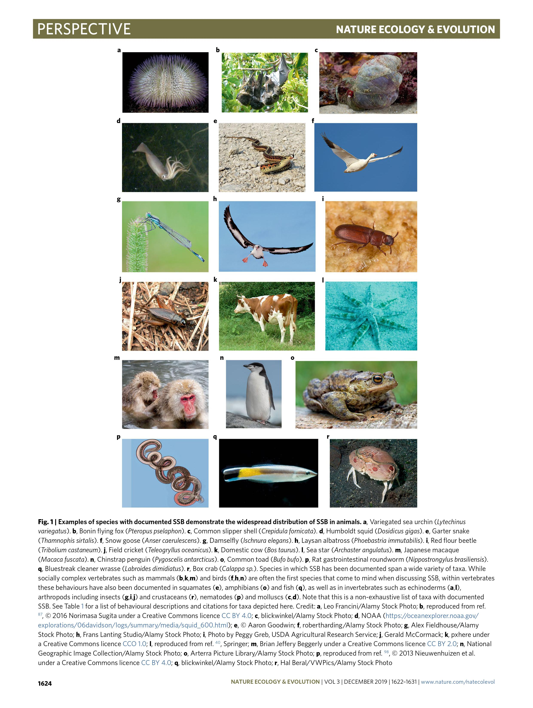

![[选译] Nature 论文：关于动物同性性行为演化的另一种假说](/science/monk2019/cover.jpg)
[选译] Nature 论文：关于动物同性性行为演化的另一种假说
译者按：这篇论文最早是微信公众号「Nature自然科研」在每周新闻中推送给我的，是刊发于2019年11月号《自然：生态学与演化》（Nature Ecology & Evolution）上的「观点（Perspective）」文章。我前天一个晚上看完了，看完总有种大脑升级的感觉，幼小的心灵受到了极大的震撼……. 花了三天，选译了几个比较有意思、比较重要或者单纯比较令人震惊的段落，放上来，各位当个“奇文共赏”就好。
论文原文：Monk, J.D., Giglio, E., Kamath, A. et al. An alternative hypothesis for the evolution of same-sex sexual behaviour in animals. Nat Ecol Evol 3, 1622–1631 (2019). https://doi.org/10.1038/s41559-019-1019-7
译者对原文内容、价值观不负责任，仅对翻译本身负责。
以下是选译的段落。译文中省去了所有的引用注记，并以 [粗体方括号] 标明跳过不译的段落。译文中粗体和斜体均为译者所加。
关于动物同性性行为演化的另一种假说
作者： Julia D. Monk1, Erin Giglio 2, Ambika Kamath3,4, Max R. Lambert 4 and Caitlin E. McDonough5
摘要： 相同性别性行为（same-sex sexual behaviour, SSB）在超过1500种动物物种中均有记录，具有同性性行为的物种分布广泛，涵盖了大部分的主演化支（major clade）。演化生物学家长久以来渴望探明“同性性行为（homosexual behaviour）”的适应性根源，以期解决这个看似有悖于进化论的难题：相同性别性行为（SSB）是如何反复进化出来并长久存在，尽管我们假定这一行为会降低物种的适应度（fitness）？这一问题隐含地假设“异性的（heterosexual）”或排他的不同性别性行为（exclusive DSB）是动物的基本情形，而SSB自其演化而来。我们质疑这种将SSB必定视作演化难题的观点，并提出：事实上，相关文本对SSB的代价、收益和起源（costs, benifits and origins）做出的假设是未经检验的。有别于此，通过视角的微妙变化，我们为SSB的进化起源提出了另一种零假设（null hypothesis，指希望能证明为错误的假设，详见零假设 - 维基百科——译者注）：我们不认同SSB的起源和维持是一个需要解决的问题。我们认为，常见的，认为DSB是远古时期的基本情形的隐含假设，并未经严格审视；我们提出的假说认为指向所有性别的无区别性行为（indiscriminate sexual behaviour）才是远古时期的基本情形。如此，通过移动我们借以研究动物性行为的镜头，我们可以更有成果地研究不同性策略的演化历史。
自从查尔斯·达尔文（Charles Darwin）首次认识到自然选择和性选择是渐进式变化的引擎，演化生物学界对性和适应度的考察大都聚焦于个体之间、被认为能产生可受精配子（fertilization-compatible gamete）的性行为，这一行为通常被冠以“异性恋（hetrosexuality）”之名。为避免与通常用于人类性特征的名词混淆（方框1；有译文，见下），且更加精确地描述个体间的特定交互，我们称此类行为为不同性别性行为（DSBs；方框1）。因为个体适宜性被广泛理解为一个与个体生存和繁衍有关的函数，潜在地导致新的后代的诞生的DSBs，清晰地表明其对适应度的影响。然而，动物通常具有一系列的性行为，它们无法被归类为DSBs，亦无法直接导致成功的繁殖。这些性行为包括个体与相同性别、不同物种、尸体、无生命器物发生的性行为，以及自慰行为（self-stimulatory behaviour）。相同性别性行为（SSBs；方框1）是最广泛目击、最深入讨论的非DSB性行为中的一个。SSB在动物中分布广泛，超过1500种动物物种有记录在册的目击报告，包括所有的主要脊椎动物演化支以及多个无脊椎动物物种群（图1和表1；有译文，见下）。这些目击报告来自被捕获个体、实验室环境以及在多种生态条件下的野生动物种群；然而，大部分已知的SSB目击是偶然的，缺乏系统观察。
随着对SSB之普遍性与日俱增的认识，演化生物学家在解决被经常视作演化难题或“达尔文式悖论”的问题上下了更多功夫：为何SSB能够演化并持续，即便它并不能引向成功繁衍并因而降低个体的适应度？况且，若群体中所有个体仅参与SSB，种群将会灭绝。试图解决这一悖论的尝试通常以特定于某分类层级（taxon）的形式，试图找到SSB的，与适应度有关的（adaptive）解释或与适应度无关的（non-adaptive）解释。概括地说，与适应度有关的假说（如亲属选择（kin selection）、等位基因超显性（overdominance）、同种性别内冲突（intrasexual conflict）、两性冲突（sexual antagonism））认为SSB之所以进化出来，是因为它间接地有益于适应度。这些假说假定，在一定的进化时间内，与SSB直接或间接相关的等位基因（ellele）和表观遗传学修饰（epigenetic mark）对其自身的延续有益。相比之下，与适应度无关或与不良适应度有关的假说（如身份错认（mistaken identity）、监狱效应（prison effect；在方框1中有相关介绍，见下）、感染）认为SSB是一种“根本上错误的策略”，并断定它们要不源于基因多效性（pleiotropic effect），要不源于动物生物学其它方面的限制。
许多这些解释性的假说构建于少数关键假设之上，这些假设大多隐含于文本，而非明确叙述。首先，SSB研究似乎认为SSB高消耗是理所当然的——与适应度有关的假说据此假定SSB的益处必须非常高才能为其存在辩护，而与适应度无关的假说则假定，一旦可能，自然选择将强烈对抗SSB。其次，这些假说似乎假定SSB在多个动物谱系（lineage）中有独立的起源，进而将SSB视为一种特性，它在每一个研究系统中独立存在，发源于一个是排他的DSB（exclusive DSB，方框1）的远古种群，并随后通过与演化或有关或无关的过程变得更加普遍。
我们质疑这些假设，并提出了另一种对SSB之普遍性的新解释：远古的动物种群，其性行为既包括DSB，又包括SSB；不同的进化过程，或适应地或非适应地，塑造了如今SSB在不同谱系中的延续和表现，但对其起源的解释，是不必要的。诚然，当我们检视在一个演化支中如此普遍的特定特性时，一个合理的假说就是这样的进化模式很可能缘起于这一进化支的起源；然而，就我们所知，这样的假说或许并不适用于SSB的进化。最简单的假说未必正确，SSB源于一个单一进化源，这样的假说无疑是SSB研究中被忽视的考量。
更进一步，我们讨论了此种假定远古群落的性行为包括DSB和SSB两者的假说，将会如何重塑科学家对现存分类层级中SSB的认知。借此，我们致力于重新定义SSB研究中的零假设——简单来说，我们提出了一种从 “为什么有SSB？” 到 “为什么不呢？” 的视角转移。在我们共有的零假设模型内，在性行为研究的不同方面中，这样的视角转移已被多次主张（例如，配偶选择中的任意特性选择（arbitrary trait choice in mate selection）及雌性配偶选择的存在本身（the existence of female mate choice）、领地意识（territoriality）、雌性多次交配（female multiple mating）），并促使这些领域的实证研究发生变革。我们坚称，这样的视角转移，这样对什么是性行为基本情况的看法的转移将激励SSB研究领域内新假说和新方法的诞生——无论我们的预测是否正确，这些新假说和新方法都将帮助我们更好地理解动物性行为的多样性。
方框1：术语和声明
我们意识到，在讨论各种动物的性行为的同时，维持一种对人类生理性别（sex；此翻译参照此处，下同。——译者注）、性向（sexuality）和社会性别（gender）的包容性视角，是相当复杂的。考虑到这点，我们努力在不排除重要的人类语境的同时，将人类性向和其他动物的性行为区分开。为避免不恰当的拟人，我们在人类社会性别和性向，与科学上的性别和性行为术语间划下了清晰边界：前者是基于个人特质、吸引力，以及性偏好和浪漫关系偏好的自我认知，后者则用于指称在非人类动物（见方框2；同有译文，见下）中发现的特定属性和特质。因此，除非用于引用，我们特意避免在手稿中使用如“异性的（hetrosexual）”和“同性的（homosexual）”一类的名词。作为替代，我们诉诸于术语相同性别的性行为（same-sex sexual behaviour，SSB）和不同性别的性行为（different-sex sexual behaviour，DSB），它们更加精确地描述了有关性互动的发现。
特别地，考虑到为涉及超过两个个体的性行为分类将会相当困难，我们使用术语SSB、DSB指代个体间离散的性互动。当考虑一个个体的完整生命周期、或一个种群中的多个个体时，由个体或群体表现的SSB - DSB程度成为了一个连续谱式的——而非二元式的——特性（图2a；不译）：注意到SSB和DSB并不是相互排斥的行为是重要的；还要清楚，DSB之广泛性并不能在任何意义上预测SSB广泛与否，反之亦然：表现出SSB的动物有时可能会表现更多的DSB，高于通常假定的程度。我们使用术语 排他的DSB（个体水平：一个个体的所有性行为都是DSB；群体水平：一个群体中的所有个体仅参与DSB）和 排他的SSB（个体水平：一个个体的所有性行为都是SSB；群体水平：一个群体中的所有个体仅参与SSB）来描述该性行为连续谱两端的理论极端情况。
人类性行为的文化构造影响了有关SSB演化的假说，特别是对于社会性脊椎动物和其它灵长类动物而言。大量有关SSB演化的解释使用人类——而不是其它物种——作为研究系统，这导致一些概念明显源于人类的社会-政治话语。例如，所谓“监狱效应（prison effect）”，声称个体在被剥夺了与不同性别的个体交配的机会后会参与SSB，就是出自单一性别场合，比如监狱，会鼓励囚犯之间的“情境性同性恋（situational homosexuality）”这一流行观点。我们注意到准确且道德地衡量人类性行为臭名昭著地困难，这使得很难控制变量；而监狱通常的强制性意味则更加剧了这些问题。源自历史，这种对人类性行为的聚焦通常使得演化生物学家仅仅通过一个单一端点（个人将“单一端点”理解为“人类”。——译者注）的社会语境来理解一种动物界广泛存在的行为。
由于无法避免的职责偏见将影响所有领域的研究者塑造他们观点的方式，我们希望读者明认：即便作者们性别、性向和子学科方向各异多样，我们均是顺性别的生物学家，且主要在欧美文化语境和科学传统中接受教育。我们的目标是：我们在此呈现的观点能引领一场对动物性行为之多样性、功能和演化的深刻审慎的讨论，这样的讨论定要包容人们多样的生理性别、心理性别和性向。
图1

表1
本表中存疑的“通称”译名将在括号中给出原文。
震惊的地方要来了！！
兴奋地搓手手（大雾（（光速逃（（（
表1 | 由横跨动物系统发生树（phylogeny）的各类多样的物种（与图1对应）表现的SSBs，以及详细记录这些行为的引用（译文中省去）
| 图示 | 通称 | 物种名称 | 行为描述 |
|---|---|---|---|
| 1a | 绿海胆 | Lytechinus variegatus | 这些海胆是扩散型产卵生物（broadcast spawner），通常在释放配子前聚集在一起。这样的聚集反映了群体中的性别分布：没有证据表明海胆可以区分潜在伴侣的性别。 |
| 1b | 小笠原狐蝠 | Pteropus pselaphon | 在野外，雄性狐蝠在仅有男性的社交种群中舔同性的生殖器——勃起的阴茎。 |
| 1c | 拖鞋贝壳（Common slipper shell） | Crepidula fornicata | 拖鞋贝壳是序贯雌雄同体生物：先作为雄性性成熟，随后过渡到雌性。较小、较易活动的雄性会与更大的个体聚集，永久交往和交配。当可以选择时，一小部分的雄性选择与其他雄性交往。 |
| 1d | 美洲大赤鱿 | Dosidicus gigas | 观察到雄性在其外套膜（mantle）上有可见的精子囊，表明该个体与另一雄性交配；精子囊与通常沉积在雌性体内的位置相同，数量相似。 |
| 1e | 束带蛇、园丁蛇（Garter snake） | Thamnophis sirtalis | 该物种的交配通常发生在大量雄性聚成球形，试图与一条单条的、处于中心的🐍交配，大多是雌性，但有时也有雄性🐍释放与雌性相似的信息素。 |
| 1f | 雪雁 | Anser caerulescens | 有报告称目击雄性-雄性配对和雌性-雌性配对，共同抚养两个个体的后代。 |
| 1g | 豆娘 | Ischnura elegans | 在该物种中，模仿雄性颜色模式的雄形（andromorphic）雌性在某些情况下会很常见。雄性经常与其他雄性交往并配对，尤其是当存在许多雄形雌性时。 |
| 1h | 黑背信天翁 | Phoebastria immutabilis | 在瓦胡岛（Oahu）上的一个黑背信天翁种群中，成对抚养后代的配对中有近三分之一是雌性-雌性配对。参与这种配对的雌性能每年繁殖后代。 |
| 1i | 赤拟谷盗 | Tribolium castaneum | 雄性经常与其他雄性配对，并试图与其交配。观察到包括释放精子在内的雌-雄交配行为的发生。 |
| 1j | 田蟋 | Teleogryllus oceanicus | 雌性蟋蟀经常相互求爱，包括求爱鸣叫，求爱姿势以及坐骑。 |
| 1k | 家牛 | Bos taurus | 当部分或所有雌性处于发情期时，混合性别的牛群中的个体有时会聚集成纯雌性的亚群体。在这些亚群体中，雌性间会表现与公牛交配时相同的求偶行为，包括舔生殖器，摩擦下巴和坐骑。 |
| 1l | 海星 | Archaster angulatus | 虽然海星是扩散型产卵生物，但此物种中的雌性确实会在释放配子之前与雌性配对，配对会保持原位长达24小时。在野生条件下，雄性-雄性配对并不罕见。 |
| 1m | 日本猕猴 | Macaca fuscata | 雌性猕猴间会规律性地配对并形成暂时但排他的关系。在此期间，它们会进行以骨盆抽动结束的同性间坐骑。雌性将与雄性竞争获得其它雌性的机会，有时会优先与雌性配对，而非与仍未配对的雄性。 |
| 1n | 南极企鹅 | Pygoscelis antarcticus | 著名的中央公园动物园（Central Park Zoom）的两只圈养的南极企鹅形成了配对，并试图孵化一个卵。 当从另一个巢获得可育卵后，它们成功共同抚养了一只小🐧。在有进化关联的巴布亚🐧和阿德利🐧中，同性配对也很常见。 |
| 1o | 大蟾蜍 | Bufo bufo | 抱合（amplexus）时，雄性蟾蜍不会区分性别、接受性或物种。抓住后，被其他雄性坐骑的雄性会使用特定的信息素以使自身被释放。 |
| 1p | 大鼠肠道蛔虫（Rat gastrointestinal roundworms） | Nippostrongylus brasiliensis | 蛔虫太恶心了，最讨厌这些东西了。不译=_= |
| 1q | 裂唇鱼 | Labroides dimidiatus | 该物种是序贯雌雄同体生物，先以雌性性成熟，在没有常驻雄性的情况下，最大的雌性会转变为雄性。然而，这些雌性会开始与其他雌性一起产卵，并在生殖转变完成前就承担起“雄性”的求爱角色和行为。此行为发生在移除雄性约一小时后。 |
| 1r | 箱蟹 | Calappa sp. | 观察到雄蟹间相互交配的时长超过连续的18天。 |
注意：本表格并未穷尽表现出SSB的物种。
一个关于性行为演化的新模型
我们提出，无区别性行为，或不含基于性别的配偶选择的性行为，将导致SSB和DSB两者，这最可能是有性生殖生物的祖先的情形。我们推断，现有模型中假定的彻底靶向的DSB，更可能是一种衍生特性：这一特性出现在一个异配生殖（anisogamous）、多细胞、无行动能力的远古物种进化出性行为之后。总的来说，考虑到排他的DSB要求配偶鉴别（分子层面的受精相容性以外的机制），逻辑上，它仅可能在可察的多样化性征（比方说，身体大小和形状，颜色，化学和听觉信号，等等）进化出来之后发生。支持这些基本原则的证据来自棘皮动物——一个与脊椎动物有关的分支谱系，它具有可能类似于祖先生物的特征，而性行为正是演化自这些特征（方框2）；此外，这类动物已被发现既表现SSB，又表现DSB。
更进一步，我们提出生态学或社会学语境下的自然选择，仅会在SSB的代价高昂得无法承受时才会对抗之。若一些特定谱系缺乏这样的代价，SSB可能延续，因为生殖适应度最大值的出现，似乎要求特别靶向受精相容的伴侣（DSB）这一代价，和更多的交配机会（SSB）这一收益之间的平衡。因此，不同程度地横跨个体的生命周期，不同程度地涉及群体中的各个个体，DSB、SSB的双重表达，或许才是大多数动物物种的常态（norm）。这代表了在远古环境下无差别性行为依然保持或中性，或——在一些情况下——有益的这一遗产。
SSB的代价和收益
我们的假说缘起于对性行为代价和收益的相对考量。对于SSB，大部分研究的隐含假设是SSB代价高昂，激发了对同样大的益处的探寻，以为高代价的SSB的存在辩护。在解释SSB于一些特定演化支——特别是一些具有复杂社会系统的物种，比如灵长类，在这样的物种中SSB的潜在益处较易鉴别——内的普遍性时，为解释SSB的进化提出的与适应度有关的假说或许确实有一定价值。然而，当我们特别考虑祖先物种是无差别性行为这一可能性时，SSB的延续并不需要很高的益处来维持。相反，我们认为SSB的代价在很多情况下能够达到最小，特别是在一些特定物种中：这些物种相较于生殖产出，其个体具有较高的交配频率。因此，SSB的普遍性和延续性可以在很大程度上由祖先起源，和自然选择的较弱对抗来解释：自然选择不会同这样一种适应代价远低于其它影响繁殖成功率的因素（如不孕不育和配偶竞争）的特性作对。
SSB的潜在性低代价这一认识，在大量研究异种性行为——不同物种间的性行为——的详尽文本中可见一斑。尽管确实有实例，表明了异种性行为的高代价（被冠以名词 “生殖干扰（reproductive interference）”），新近研究同样表明在一些分类层级中，异种性行为能够延续，因为其代价低于减少交配的成本和构建用于识别同物种配偶的额外机制的成本。例如，一项近期研究发现，当将密切关联的南瓜虫（squash bug）物种放在一起时，异种交配相当普遍，但参与该行为的个体与同种个体的交配率也很高，并且和不允许与同种个体交配的个体具有相似的孵化成功率。与之类似，对于那些不在个体的单次交配尝试上下过高赌注的物种，SSB也会具有较低的代价。
DSB的代价和收益
一些假说，不论与适应有没有关系，在解释SSB的演化时，通常都基于一个隐含的前提：远古时的情形是一个排他DSB的群体，遭受了编码有SSB的等位基因的入侵；前后比较，较少的DSB与适应度降低紧密相连。这样的假定同样体现在描述性行为的少数模型中：这些模型假设DSB，特别是“紧盯雌性”的雄性，会快速进化，因为远古时期的扩散型产卵所导致的高交配后精子竞争（方框2），会带来很大的选择压（selection pressure）。这些模型假设正因DSB是生殖所必需的，自然选择会高度青睐高水平的DSB；不仅如此，它们还假设盯雌性盯得更紧的雄性——意味着更高水平的DSB，会提升繁殖成功率。
然而，事实通常并非如此——诸如配偶竞争、交配顺序、交配年龄、配子质量、精子浓度以及由雌性主导的交配后选择对DSB能否最终引向后代的诞生起着关键作用。更进一步，在许多动物物种中，DSB并不仅仅服务于一些独特场合下的受精，它可能还有着多种非生殖的功能：这表明“过度的”性行为并不会显著降低适应度。相反，不断增加的配偶甄别和性别特定的性行为是有代价的：错失的交配机会，以及行为学和形态学上的第二性征的建构（不同性别的个体籍此确信配偶确实是不同性别）。例如，当雄性埋葬虫（burying beetle）注意到错失与雌性交配的次数上升时，会更多地参与SSB；这表明在交配机会稀缺的情形下，排他DSB可以是不利的。
综上所述，我们认为：尽管DSB的增多能够最大化受精的可能性，并且，由此推断，能使适应度在一些——或许是广泛——条件下达到最大，并不说明更多的DSB是引向更高适应度的唯一可行措施。排他DSB，与其说是表现了有性生殖动物的基本策略，不如说是代表了一种必须在第二性征发育完全之后才能出现的次生特性，而且这种特性仅在一些特殊语境下才是适应性的。
移动基线
时至今日，演化生物学家总在问SSB为什么能够进化，SSB为什么能够延续，而不管其明显代价。通过质疑SSB的“明显代价”终究是不是如此明显，我们反对这种观点。我们要问的是，构建代价高昂的配偶识别系统并通过高选择率潜在地限制交配机会，是否，以及何时，能够进化，尽管性行为的通吃策略能有足够高的受精机率和足够低的代价。这正是我们论点的关键：任何为解释动物SSB的“目的”而提出的与适应有关无关的假说，或许能很好地解释其延续性，包括SSB附带的非生殖功能；但是，SSB并不缘起于产生这些功能的较近的演化事件，而是源于性行为的最早形式。
这种看似微妙的区分基于一关键概念：正在经历演化变化的一个群体，其初始条件对其演化轨迹，有着关键的，甚至是方向性的影响。演化轨迹的预期代价、收益和可能性之间的差异，依赖于我们是否假定自然选择会青睐某种初始时罕见的特性，或者抵抗某种初始时常见的特性。因此，通过移动有关这些性行为起源的假设，我们的假说极大地改变了选择性机制，如今在动物中见到的性行为的多样性正是由此而生。
我们的理论与此先指出研究狭隘地聚焦于适应性进化的批评一致。这样的对于适应的关注，会导致一种倾向：即将现存特质解释为在较强自然选择下，近期演化变化的表征；而不是出自较弱或缺乏选择、不断浮动的选择压和生物学限制的特性。在基于一种SSB主要是中性的假说，在不同的演化支和生态学语境下，青睐DSB、抵抗SSB的选择或许很强，抵抗SSB的选择或许可忽略，在一些情况下青睐高度或特定类别SSB的选择或许很强。事实上，早先曾有研究提出，SSB最早是作为非人类灵长类动物的中性变异出现的，随后各种新兴的群体性行为带来的益处增强了对该特性的定向选择。我们外延这一假说，提出配偶行为的这一变异，是所有有性生殖、雌雄异体动物的祖先。因而，我们预测，动物性行为令人震惊的多样性，是多种程度的适应性或非适应性过程（包括基因漂变）对当下个体、种群和物种的DSB - SSB连续谱持续性选择的结果。
方框2：定义与性生殖有关的性行为
动物内和动物间繁殖模式和系统令人惊讶的多样性，提示了准确定义性行为会令人沮丧地困难。总的来说，由于人类更容易辨认出和我们具有相似性行为方式的物种的性行为，我们注意到观察者偏差在动物性行为的鉴别、描述和理解中广泛存在（方框1）。因此，我们尝试建立对动物性行为的有效定义，以及性和性生殖的概念：这些定义既要能反映自然变异，又要能表明大多数生物特征是如何连续变化的。
我们使用广义的动物性行为定义：任何可能对成功繁殖有贡献的行为；这些行为——不论在何种情况下观察到它们——可能出现在交配时、求爱中或配对间。成功的繁殖要求通过性生殖达成后代的诞生：形成后代的遗传物质的组合，通常源自大小不同的配子的融合（异配生殖）。因此，特别是对个体仅产生一种类型配子的雌雄异体系统，性这一概念定义于它们产生的配子类型：雌性（典型地，带有较大细胞质的配子（卵子））、雄性（更小的，主要是DNA的配子（精子））。要注意到，这些定义无法充分描述不产生配子的生殖行为，此外，在多个分类层级中，对性别的可行定义通常依赖于更加明显的第二性征。意识到这些局限，围绕本文之主旨，我们将我们对性的理解建构于其基因解释之上，以期广泛理解针对“相同性别”个体和“不同性别”个体的性行为。
借上述定义，性行为必须要等到性生殖出现以后才能进化出来。然而，研究性行为的理论工作令人惊讶地罕见。一个值得注意的例外是帕克（Parker）的模型，这一模型假定运动能力、行为复杂性、交配和内部受精（这一进程包括性行为）是进化自一个异配生殖的、多细胞的、无运动能力的物种。在本文中，我们认为现存动物的、有性行为的最近共同祖先，源自一个相似的进化起源。然而，这并未排除性行为具有多个起源这一可能，亦未断言非异配生殖、非多细胞的生物就没有性行为。重点在于，往下走，我们偏离了帕克模型的逻辑：帕克模型特别假设这一转变必定导致对雄性“紧盯雌性”的性行为的强选择；我们则进一步认为，这些模型反应了一个主流的隐含假设，即性行为仅针对不同性别的个体而演化：这正是我们的假说要质疑的。
[以下对应原文中 “Implications for studing SSB” 段落，包括三级子标题 “Phylogenetic comparisons” 和 “Ecology and natural history of SSB”，不译；此外还有 图2（“ Conceptual representation of the variation in SSB and DSB that is possible at the individual and population, and species levels.”）、图3（“Ecological, evolutionary and developmental factors may influence the expression of SSB.”），均不译]
[除上述提及的段落，原文中其它所有文字均有译文]
结束语
如果任何一种特性能够出现在如此广泛多样的分类层级中，这一特性是源于最早的动物演化支的远古情形这一点，很可能早就取得了广泛认同——只要该特性不是SSB。视SSB为一种在如此之多不同的谱系中独立趋同进化的观点，只会使得视异性恋为基准的世界性思潮更加根深蒂固：在这样的世界中，“异性的”性行为被定格为有性生殖生物的“自然情况”，而“同性的”则被视为一种必须解释其存在并为其正名的反常情况。因此，横跨演化生物学界的欧美文化规范——视异性恋为基准的、父系的——的持续延续已经影响了有关性行为的讨论，它使得这些讨论主要集中于DSB：一种单一的、被认为文化上可接受的性行为（方框1）。
质疑这些偏见，为有关性行为进化的更简单假说（奥卡姆剃刀。——译者注）创造了空间。随着有关各种物种性行为如何演化的研究不断推进，我们断言，相较于仅表现DSB（排他DSB）的物种，同时表现SSB和DSB的物种更加普遍——前者可能才是自然界中的罕见情况。自然选择不同程度地青睐或对抗DSB和SSB，围绕这一点的各种问题为演化生物学提供了令人兴奋的机遇。由于这一领域相关研究的贫乏，当下任何对我们假说的外延都是可疑的；但是，放松施加在有关性行为的演化理论上的传统限制，无疑会激起对这些行为在动物生态学和动物进化语境下具有如何多样的角色更加广阔、更加彻底的探讨——我们对此感到兴奋。视SSB为一种源于“异性的”、独立进化的、近期才出现的现象，而非各种复杂难解的行为、特质和策略光谱被我们不负责任地归为“性”和“性行为”中的一个受害者，无疑是一种二元本质论的表征——这种论调不仅妨碍社会解放和自由，还会妨碍科学发现。
接收于：2019年6月5日；接受于：2019年9月30日
在线发表于：2019年11月18日
全文完。翻译：Ray Eldath。
译注：注意，本文并不是所谓的「original research article」，即「原创研究论文」，而仅仅是一篇review性质的“Perspective”——这点从本文较短的长度中就可以看出来，详细的举例和论证应该引文中。为方便，本文翻译时去除了所有的引用注记，这可能使本译文显得缺乏证据。
需要强调的是，作为一篇「观点（Perspective）」文章，本文的最大意义和最终目的，并不在于足够充分、足够彻底地举证以证明文中提出的新假说；而是在于通过提出当下该领域研究的很多理所应当的假设，事实上是未经检验的，来激起对「另一种可能」的探讨。文章的目的在于使人们注意到这样的另一种可能，并期望后续更深刻、彻底的研究能对这种可能性进行实证的——无论是支持还是反对——证据搜集和论证。正如作者们说的：
更进一步，我们讨论了此种假定远古群落的性行为包括DSB和SSB两者的假说，将会如何重塑科学家对现存分类层级中SSB的认知。借此，我们致力于重新定义SSB研究中的零假设——简单来说，我们提出了一种从 “为什么有SSB？” 到 “为什么不呢？” 的视角转移。 …… 我们坚称，这样的视角转移，这样对什么是性行为基本情况的看法的转移将激励SSB研究领域内新假说和新方法的诞生——无论我们的预测是否正确，这些新假说和新方法都将帮助我们更好地理解动物性行为的多样性。……
我们的目标是：我们在此呈现的观点能引领一场对动物性行为之多样性、功能和演化的深刻审慎的讨论，这样的讨论定要包容人们多样的生理性别、心理性别和性向。
校对的时候发现好几个DSB给打成DSL（领域特定语言）了。。太搞笑了，😅😅
居然差不多一万字了。。。。惊了，如果翻译也算是我的东西的话，那连续两篇文章破记录，本身也算是“破纪录”了吧？哈哈。
总之就是这样，祈愿本学期能不挂科吧。
最后来看一下论文文末的“致谢（Acknowledgements）”：
This project could not have come to fruition without many dynamic and thought-provoking conversations with natural and social scientists, feminists, LGBTQIA+ activists, friends and family members. We particularly thank A. Wesner and the members of the Queer Ecologies Working Group within the Social Science Matrix at UC Berkeley, who facilitated a workshop and……
我就知道。
[选译] Nature 论文：关于动物同性性行为演化的另一种假说